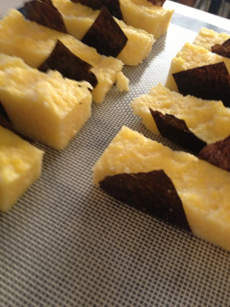
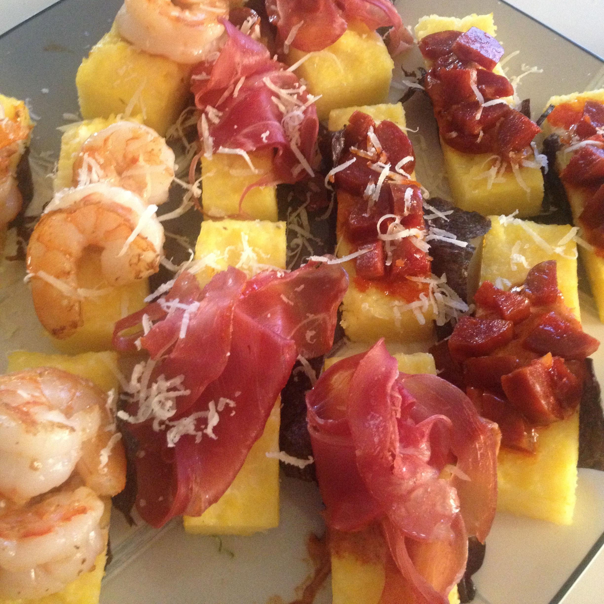

Welcome to AboutHalf
{kind=link}
{kind=link}
The site of the living dead linked to a piece by Joshua Seiden entitled “Designers shouldn’t code” is the wrong answer to the right question
This article, a response to another article, tackles the conceit that web designers shouldn’t be “coders” – the belief that concerning oneself with implementation details will prevent good design or user-focused design. Joshua makes the case that designers that code produce a better product than designers that don’t. I agree, but I don’t know that “code” is the one solution to the problem.
If all you have is Photoshop, everything looks like a pixel
Static designs for software or the web, produced in Photoshop, are incomplete. To make a complete statement, to fully design the experience, the design must include truly interactive features. How does the menu open? How fast does it open? What happens when you change views? These things are important to the total experience. Why leave them to chance? Why let a developer choose the wrong implementation?
If you can code it, code it. If not, fake it.
If a designer or design team has the ability and capacity to deliver working prototypes in “code” (HTML or whatever) that’s a great way to communicate design intentions. It’s not the only way. Do you have a copy of Flash lying around? Mock it up in Flash. Can you fake it in Keynote? What about making a movie? Can you animate it in iMovie? There are all kinds of ways to thoroughly communicate your intentions. Code is great. If it’s good enough code, maybe it can get pulled right into the final product. Even if it’s not, it demonstrates that what you want is possible. The most important thing is not to leave the important details of interaction design to chance. Do it in Flash, hire a UX developer to do prototypes exclusively, but do all of the work. Design the full experience.
Lack of tools
Part of the problem is the strangle-hold that Adobe has on the creative industry. Photoshop and Illustrator are great tools for making pictures with text on them, but they’re terribly inadequate for interaction design. Designers need to find and champion new tools that do the job better.
Tools like Macaw and Adobe Edge Reflow look promising, at least for standard web sites. Tools like Hype might be just the thing for interactive software design.
Tonight before you go to bed, put two cocktail glasses in the freezer.
Tomorrow when you get home from work, prepare a martini (4 parts gin to one part Dolin dry vermouth) in the first glass. Enjoy that martini.
When the martini is done, wash and rinse the glass. Return it to the freezer. Now you can have a second martini in a freshly chilled glass, while the first glass is re-chilled.
Warning: This process can repeat indefinitely.
The most recent Back to Work podcast discusses, among everything, the phrase “I feel like a fraud” as expressed by someone who has just achieved some new success. In this case Shawn Blanc felt this way right before releasing his book.
Merlin and Dan (our hosts) tried to deconstruct this and wandered down topics of confidence, failure, the impostor syndrome and seething hate for maudlin clichéd advice. It’s a good discussion (when they’re on, they’re on) but I think they missed a bit about feeling like a fraud.
When I was 24 and fresh out of grad school, I lucked into an adjunct teaching position to supplement my poorly paid job as a Jr. Art Director (2nd class). Unlike what Dan and Merlin suggest, I was very confident in my abilities. I knew my stuff cold. I could bore you with copious details at the drop of a hat. I had no doubt that I could do the work. The problem was that now I was a teacher — that’s serious business.
The title “teacher” holds serious psychic weight. I enjoyed school growing up. I respected teachers. They kept it real, man. I felt like a fraud because I didn’t think I lived up to the symbol in my head, carved into marble and placed on a pedestal. It took about 6 months of teaching, nearly the full academic year, to acclimate to my new normal.
By then I had gotten to know “real” teachers. I worked with a great faculty who cared a lot and worked hard but also bragged about that one class they hadn’t updated their notes for in 20 years. They were just regular people who happened to have a job that I cared about. Just like me. I fit in just fine.
I don’t know, but I suspect, Shawn Blanc has similar feelings about the word “author” — being an author means something. Calling yourself an author for the first time is like wearing a new hat. At first you’re “hey I’m wearing-a-hat-guy” but after a while you adjust to the new normal and it becomes real and true. It fits just fine.
{kind=link}
{kind=link}
The ketchup recipe calls for “red mangoes”.
No, really.
I came up with something sort of clever for my wife’s birthday dinner. I wanted to make some snacks to go with cocktails. I like to start dinner parties with a cocktail and a snack. It gives people something to do immediately. If someone has just come from work, starving and grumpy, a bite to eat and a well-made beverage will cure what ails them.
I love polenta (née grits) and how it pairs with everything. You can serve polenta loose and hot as a base for a sauce, or a bed for meat and vegetables. You can chill it, then slice it up and fry it. It get crunchy and brown on the outside while staying creamy-soft in the middle.
I wanted to turn polenta into finger food – and I thought “what if sushi was invented in Spain?”
I cooked the polenta as normal, 1 part polenta to 3 parts water with butter and salt. If I’m using polenta as part of a main dish, I’ll cook it with chicken or vegetable stock, but I decided to keep this simple. Once the polenta was cooked I spooned it into a square baking dish coated lightly with olive oil. I let it cool to room temperature and then placed it into the refrigerator to chill and solidify. Once it was solid I turned the polenta out onto a cutting board. First I trimmed the edges to make a perfect square (no rounded rectangles in my kitchen). I cut the polenta down into small, thin bars by cutting it into quarters and each quarter into thirds.
I cut 12 strips of nori (the seaweed paper you wrap around sushi) and wrapped each polenta bar at a 45º angle – so the nori came up around the sides, but waved in the air like little flags. The nori sticks right to the polenta, just like rice, and adds a little salty crispness to the polenta. Mostly, though, it’s a dry, easy to grab handle for the polenta.

I laid all the nori-wrapped polenta bars onto a cookie sheet to wait while I prepared toppings. I sautéed some shrimp, diced some chorizo, and rolled up some prosciutto[1]. I mixed together a paste of equal parts mayonnaise and tomato paste with paprika, cumin, and anchovy paste to make a sort of glue – standing in for the wasabi.
I used this paste to hold down the shrimp, chorizo, and prosciutto on top of the polenta bars. Once assembled I warmed them in a low oven (200 ºF) and transferred them to a serving dish when my guests arrived.

-
I really wanted to get some jamón ibérico for this, but no luck. ↩